CharAI: 2D character animation engine and AI agent skill
CharAI is an open-source 2D character animation engine and agent skill. An AI agent (or a person) draws any human as a small data file and directs it with a short .char script; the engine supplies skeleton, motion, physics, moods, lip sync and speech, two-character contact and props. Characters only: the host supplies the scenery. Side view only in this release.
Key facts
- Apache 2.0. No runtime dependencies: one script file,
dist/char.js, and a<char-stage>web component. - Every frame is a pure function of time (
seek(t)), the contract HyperFrames, Remotion and GSAP timelines use. Snippets for those three are untested; two plain-HTML host examples are tested. - Exports MP4, transparent WebM and ProRes, PNG sequence and animated SVG.
- Built with Claude Code. Only Claude models have been tried.
- Measured costs, including a test it lost, are in the evidence.
Documents
- SKILL.md
- docs/CHARACTER.md
- docs/AUTHORING.md
- docs/ACTIONS.md
- docs/HOSTS.md
- docs/EVIDENCE.md
- docs/KNOWN-ISSUES.md
Frequently asked questions
What is CharAI?
CharAI is an open-source 2D character animation engine and agent skill. An AI agent or a person draws any human as a small skin data file and directs it with a short .char script; the engine supplies skeleton, motion, physics, moods, lip sync, two-character contact and props.
How do I animate a character with Claude Code?
Put this repository in .claude/skills/charai/ and ask Claude Code to draw a character or write a film. It reads SKILL.md, follows the document for the job, then loops: write, run the check (node tools/check.cjs films/x), look at the picture, fix.
Does it work with HyperFrames, Remotion or GSAP?
The frame is a pure function of time (seek(t)), the contract those timelines use, and docs/HOSTS.md has a snippet for each. Those three snippets are untested; HyperFrames is "snippet provided, not yet tested". Two plain-HTML host examples in examples/ are tested.
How does it compare with Lemo-Opuscar?
Lemo-Opuscar is a style library for code-made films. On two 30 s episodes on Sonnet, CharAI used 425,057 tokens against 667,202; on a 30 s silhouette film on Opus it lost, at 391,611 against 318,987, and looked worse. These are single runs, and CharAI is meant to complement style libraries as their character layer.
Which models built it?
It was built with Claude Code. Claude Fable 5.2 was architect and reviewer, Claude Opus 5.5 wrote the engine code, and Claude Sonnet wrote characters, actions, scenes, tools and packaging from the documents alone. Only Claude models have been tried.
What does it cost in tokens?
Claude Sonnet wrote a character in about 41,800 tokens, an action in about 8,200, and a 20 s two-character scene in 98,844. Each figure is one run; see docs/EVIDENCE.md.
What can't it do?
Side view only (no three-quarter or front view), flat cartoon styles, no scenery, no 3D, simple hands, and spring physics for hair and cloth rather than simulation. Lip sync matches the speech but is not polished. Known faults are in docs/KNOWN-ISSUES.md.
Does it need an artist or motion capture?
No. The agent writes a skin as numbers plus a few SVG paths, and motion comes from the engine's actions, which are a few key poses each. There is no library of ready-made characters; a few worked examples are in skins/.
What licence is it under?
Apache License 2.0; see LICENSE and NOTICE. It has no runtime dependencies.
How do I add a new action?
Write a small file of key poses in body terms, register it in CharActions, and check it with node tools/actioncheck.cjs actions/x.js. See it with node tools/action.cjs x out.png. The format is in docs/ACTIONS.md.